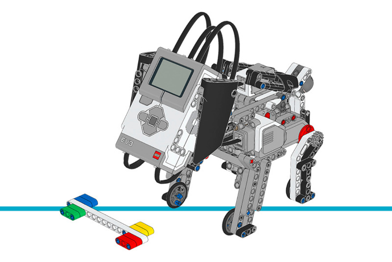

Puppy¶
This example program gives the Puppy up to 8 behaviors. It exhibits different
behaviors in response to being fed
(the ColorSensor sees colors)
or petted
(the TouchSensor is pressed).
Building instructions
Click here to find all building instructions for the Core Set Models, or use this link to go to the Puppy directly.

Figure 29 Puppy
Example program
#!/usr/bin/env pybricks-micropython
"""
Example LEGO® MINDSTORMS® EV3 Puppy Program
-------------------------------------------
This program requires LEGO® EV3 MicroPython v2.0.
Download: https://education.lego.com/en-us/support/mindstorms-ev3/python-for-ev3
Building instructions can be found at:
https://education.lego.com/en-us/support/mindstorms-ev3/building-instructions#building-core
"""
import urandom
from pybricks.hubs import EV3Brick
from pybricks.ev3devices import Motor, ColorSensor, TouchSensor
from pybricks.parameters import Port, Button, Color, Direction
from pybricks.media.ev3dev import Image, ImageFile, SoundFile
from pybricks.tools import wait, StopWatch
class Puppy:
# These constants are used for positioning the legs.
HALF_UP_ANGLE = 25
STAND_UP_ANGLE = 65
STRETCH_ANGLE = 125
# These constants are for positioning the head.
HEAD_UP_ANGLE = 0
HEAD_DOWN_ANGLE = -40
# These constants are for the eyes.
NEUTRAL_EYES = Image(ImageFile.NEUTRAL)
TIRED_EYES = Image(ImageFile.TIRED_MIDDLE)
TIRED_LEFT_EYES = Image(ImageFile.TIRED_LEFT)
TIRED_RIGHT_EYES = Image(ImageFile.TIRED_RIGHT)
SLEEPING_EYES = Image(ImageFile.SLEEPING)
HURT_EYES = Image(ImageFile.HURT)
ANGRY_EYES = Image(ImageFile.ANGRY)
HEART_EYES = Image(ImageFile.LOVE)
SQUINTY_EYES = Image(ImageFile.TEAR) # the tear is erased later
def __init__(self):
# Initialize the EV3 brick.
self.ev3 = EV3Brick()
# Initialize the motors connected to the back legs.
self.left_leg_motor = Motor(Port.D, Direction.COUNTERCLOCKWISE)
self.right_leg_motor = Motor(Port.A, Direction.COUNTERCLOCKWISE)
# Initialize the motor connected to the head.
# Worm gear moves 1 tooth per rotation. It is interfaced to a 24-tooth
# gear. The 24-tooth gear is connected to parallel 12-tooth gears via
# an axle. The 12-tooth gears interface with 36-tooth gears.
self.head_motor = Motor(Port.C, Direction.COUNTERCLOCKWISE,
gears=[[1, 24], [12, 36]])
# Initialize the Color Sensor. It is used to detect the colors when
# feeding the puppy.
self.color_sensor = ColorSensor(Port.S4)
# Initialize the touch sensor. It is used to detect when someone pets
# the puppy.
self.touch_sensor = TouchSensor(Port.S1)
self.pet_count_timer = StopWatch()
self.feed_count_timer = StopWatch()
self.count_changed_timer = StopWatch()
# These attributes are initialized later in the reset() method.
self.pet_target = None
self.feed_target = None
self.pet_count = None
self.feed_count = None
# These attributes are used by properties.
self._behavior = None
self._behavior_changed = None
self._eyes = None
self._eyes_changed = None
# These attributes are used in the eyes update
self.eyes_timer_1 = StopWatch()
self.eyes_timer_1_end = 0
self.eyes_timer_2 = StopWatch()
self.eyes_timer_2_end = 0
self.eyes_closed = False
# These attributes are used by the playful behavior.
self.playful_timer = StopWatch()
self.playful_bark_interval = None
# These attributes are used in the update methods.
self.prev_petted = None
self.prev_color = None
def adjust_head(self):
"""Use the up and down buttons on the EV3 brick to adjust the puppy's
head up or down.
"""
self.ev3.screen.load_image(ImageFile.EV3_ICON)
self.ev3.light.on(Color.ORANGE)
while True:
buttons = self.ev3.buttons.pressed()
if Button.CENTER in buttons:
break
elif Button.UP in buttons:
self.head_motor.run(20)
elif Button.DOWN in buttons:
self.head_motor.run(-20)
else:
self.head_motor.stop()
wait(100)
self.head_motor.stop()
self.head_motor.reset_angle(0)
self.ev3.light.on(Color.GREEN)
def move_head(self, target):
"""Move the head to the target angle.
Arguments:
target (int):
The target angle in degrees. 0 is the starting position,
negative values are below this point and positive values
are above this point.
"""
self.head_motor.run_target(20, target)
def reset(self):
# must be called when puppy is sitting down.
self.left_leg_motor.reset_angle(0)
self.right_leg_motor.reset_angle(0)
# Pick a random number of time to pet the puppy.
self.pet_target = urandom.randint(3, 6)
# Pick a random number of time to feed the puppy.
self.feed_target = urandom.randint(2, 4)
# Pet count and feed count both start at 1
self.pet_count, self.feed_count = 1, 1
# Reset timers.
self.pet_count_timer.reset()
self.feed_count_timer.reset()
self.count_changed_timer.reset()
# Set initial behavior.
self.behavior = self.idle
# The next 8 methods define the 8 behaviors of the puppy.
def idle(self):
"""The puppy is idle and waiting for someone to pet it or feed it."""
if self.did_behavior_change:
print('idle')
self.stand_up()
self.update_eyes()
self.update_behavior()
self.update_pet_count()
self.update_feed_count()
def go_to_sleep(self):
"""Makes the puppy go to sleep."""
if self.did_behavior_change:
print('go_to_sleep')
self.eyes = self.TIRED_EYES
self.sit_down()
self.move_head(self.HEAD_DOWN_ANGLE)
self.eyes = self.SLEEPING_EYES
self.ev3.speaker.play_file(SoundFile.SNORING)
if self.touch_sensor.pressed() and Button.CENTER in self.ev3.buttons.pressed():
self.count_changed_timer.reset()
self.behavior = self.wake_up
def wake_up(self):
"""Makes the puppy wake up."""
if self.did_behavior_change:
print('wake_up')
self.eyes = self.TIRED_EYES
self.ev3.speaker.play_file(SoundFile.DOG_WHINE)
self.move_head(self.HEAD_UP_ANGLE)
self.sit_down()
self.stretch()
wait(1000)
self.stand_up()
self.behavior = self.idle
def act_playful(self):
"""Makes the puppy act playful."""
if self.did_behavior_change:
print('act_playful')
self.eyes = self.NEUTRAL_EYES
self.stand_up()
self.playful_bark_interval = 0
if self.update_pet_count():
# If the puppy was petted, then we are done being playful
self.behavior = self.idle
if self.playful_timer.time() > self.playful_bark_interval:
self.ev3.speaker.play_file(SoundFile.DOG_BARK_2)
self.playful_timer.reset()
self.playful_bark_interval = urandom.randint(4, 8) * 1000
def act_angry(self):
"""Makes the puppy act angry."""
if self.did_behavior_change:
print('act_angry')
self.eyes = self.ANGRY_EYES
self.ev3.speaker.play_file(SoundFile.DOG_GROWL)
self.stand_up()
wait(1500)
self.ev3.speaker.play_file(SoundFile.DOG_BARK_1)
self.pet_count -= 1
print('pet_count:', self.pet_count, 'pet_target:', self.pet_target)
self.behavior = self.idle
def act_hungry(self):
if self.did_behavior_change:
print('act_hungry')
self.eyes = self.HURT_EYES
self.sit_down()
self.ev3.speaker.play_file(SoundFile.DOG_WHINE)
if self.update_feed_count():
# If we got food, then we are not longer hungry.
self.behavior = self.idle
if self.update_pet_count():
# If we got a pet instead of food, then we are angry.
self.behavior = self.act_angry
def go_to_bathroom(self):
if self.did_behavior_change:
print('go_to_bathroom')
self.eyes = self.SQUINTY_EYES
self.stand_up()
wait(100)
self.right_leg_motor.run_target(100, self.STRETCH_ANGLE)
wait(800)
self.ev3.speaker.play_file(SoundFile.HORN_1)
wait(1000)
for _ in range(3):
self.right_leg_motor.run_angle(100, 20)
self.right_leg_motor.run_angle(100, -20)
self.right_leg_motor.run_target(100, self.STAND_UP_ANGLE)
self.feed_count = 1
self.behavior = self.idle
def act_happy(self):
if self.did_behavior_change:
print('act_happy')
self.eyes = self.HEART_EYES
# self.move_head(self.?)
self.sit_down()
for _ in range(3):
self.ev3.speaker.play_file(SoundFile.DOG_BARK_1)
self.hop()
wait(500)
self.sit_down()
self.reset()
def sit_down(self):
"""Makes the puppy sit down."""
self.left_leg_motor.run(-50)
self.right_leg_motor.run(-50)
wait(1000)
self.left_leg_motor.stop()
self.right_leg_motor.stop()
wait(100)
# The next 4 methods define actions that are used to make some parts of
# the behaviors above.
def stand_up(self):
"""Makes the puppy stand up."""
self.left_leg_motor.run_target(100, self.HALF_UP_ANGLE, wait=False)
self.right_leg_motor.run_target(100, self.HALF_UP_ANGLE)
while not self.left_leg_motor.control.done():
wait(100)
self.left_leg_motor.run_target(50, self.STAND_UP_ANGLE, wait=False)
self.right_leg_motor.run_target(50, self.STAND_UP_ANGLE)
while not self.left_leg_motor.control.done():
wait(100)
wait(500)
def stretch(self):
"""Makes the puppy stretch its legs backwards."""
self.stand_up()
self.left_leg_motor.run_target(100, self.STRETCH_ANGLE, wait=False)
self.right_leg_motor.run_target(100, self.STRETCH_ANGLE)
while not self.left_leg_motor.control.done():
wait(100)
self.ev3.speaker.play_file(SoundFile.DOG_WHINE)
self.left_leg_motor.run_target(100, self.STAND_UP_ANGLE, wait=False)
self.right_leg_motor.run_target(100, self.STAND_UP_ANGLE)
while not self.left_leg_motor.control.done():
wait(100)
def hop(self):
"""Makes the puppy hop."""
self.left_leg_motor.run(500)
self.right_leg_motor.run(500)
wait(275)
self.left_leg_motor.hold()
self.right_leg_motor.hold()
wait(275)
self.left_leg_motor.run(-50)
self.right_leg_motor.run(-50)
wait(275)
self.left_leg_motor.stop()
self.right_leg_motor.stop()
@property
def behavior(self):
"""Gets and sets the current behavior."""
return self._behavior
@behavior.setter
def behavior(self, value):
if self._behavior != value:
self._behavior = value
self._behavior_changed = True
@property
def did_behavior_change(self):
"""bool: Tests if the behavior changed since the last time this
property was read.
"""
if self._behavior_changed:
self._behavior_changed = False
return True
return False
def update_behavior(self):
"""Updates the :prop:`behavior` property based on the current state
of petting and feeding.
"""
if self.pet_count == self.pet_target and self.feed_count == self.feed_target:
# If we have the exact right amount of pets and feeds, act happy.
self.behavior = self.act_happy
elif self.pet_count > self.pet_target and self.feed_count < self.feed_target:
# If we have too many pets and not enough food, act angry.
self.behavior = self.act_angry
elif self.pet_count < self.pet_target and self.feed_count > self.feed_target:
# If we have not enough pets and too much food, go to the bathroom.
self.behavior = self.go_to_bathroom
elif self.pet_count == 0 and self.feed_count > 0:
# If we have no pets and some food, act playful.
self.behavior = self.act_playful
elif self.feed_count == 0:
# If we have no food, act hungry.
self.behavior = self.act_hungry
@property
def eyes(self):
"""Gets and sets the eyes."""
return self._eyes
@eyes.setter
def eyes(self, value):
if value != self._eyes:
self._eyes = value
self.ev3.screen.load_image(value)
def update_eyes(self):
if self.eyes_timer_1.time() > self.eyes_timer_1_end:
self.eyes_timer_1.reset()
if self.eyes == self.SLEEPING_EYES:
self.eyes_timer_1_end = urandom.randint(1, 5) * 1000
self.eyes = self.TIRED_RIGHT_EYES
else:
self.eyes_timer_1_end = 250
self.eyes = self.SLEEPING_EYES
if self.eyes_timer_2.time() > self.eyes_timer_2_end:
self.eyes_timer_2.reset()
if self.eyes != self.SLEEPING_EYES:
self.eyes_timer_2_end = urandom.randint(1, 10) * 1000
if self.eyes != self.TIRED_LEFT_EYES:
self.eyes = self.TIRED_LEFT_EYES
else:
self.eyes = self.TIRED_RIGHT_EYES
def update_pet_count(self):
"""Updates the :attr:`pet_count` attribute if the puppy is currently
being petted (touch sensor pressed).
Returns:
bool:
``True`` if the puppy was petted since the last time this method
was called, otherwise ``False``.
"""
changed = False
petted = self.touch_sensor.pressed()
if petted and petted != self.prev_petted:
self.pet_count += 1
print('pet_count:', self.pet_count, 'pet_target:', self.pet_target)
self.count_changed_timer.reset()
if not self.behavior == self.act_hungry:
self.eyes = self.SQUINTY_EYES
self.ev3.speaker.play_file(SoundFile.DOG_SNIFF)
changed = True
self.prev_petted = petted
return changed
def update_feed_count(self):
"""Updates the :attr:`feed_count` attribute if the puppy is currently
being fed (color sensor detects a color).
Returns:
bool:
``True`` if the puppy was fed since the last time this method
was called, otherwise ``False``.
"""
color = self.color_sensor.color()
changed = False
if color is not None and color != Color.BLACK and color != self.prev_color:
self.feed_count += 1
print('feed_count:', self.feed_count, 'feed_target:', self.feed_target)
changed = True
self.count_changed_timer.reset()
self.prev_color = color
self.eyes = self.SQUINTY_EYES
self.ev3.speaker.play_file(SoundFile.CRUNCHING)
return changed
def monitor_counts(self):
"""Monitors pet and feed counts and decreases them over time."""
if self.pet_count_timer.time() > 15000:
self.pet_count_timer.reset()
self.pet_count = max(0, self.pet_count - 1)
print('pet_count:', self.pet_count, 'pet_target:', self.pet_target)
if self.feed_count_timer.time() > 15000:
self.feed_count_timer.reset()
self.feed_count = max(0, self.feed_count - 1)
print('feed_count:', self.feed_count, 'feed_target:', self.feed_target)
if self.count_changed_timer.time() > 30000:
# If nothing has happened for 30 seconds, go to sleep
self.count_changed_timer.reset()
self.behavior = self.go_to_sleep
def run(self):
"""This is the main program run loop."""
self.sit_down()
self.adjust_head()
self.eyes = self.SLEEPING_EYES
self.reset()
while True:
self.monitor_counts()
self.behavior()
wait(100)
# This covers up the tear to make a new image.
Puppy.SQUINTY_EYES.draw_box(120, 60, 140, 85, fill=True, color=Color.WHITE)
if __name__ == '__main__':
puppy = Puppy()
puppy.run()